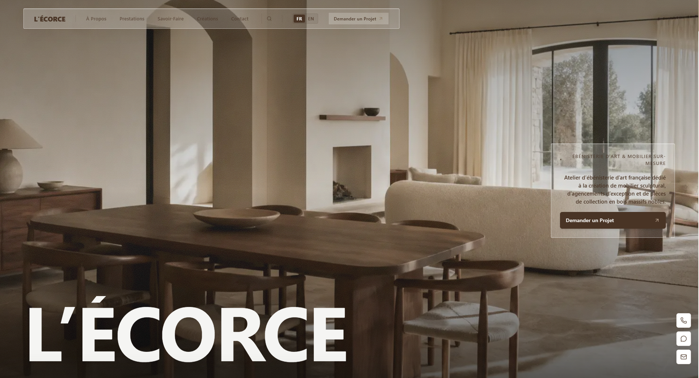
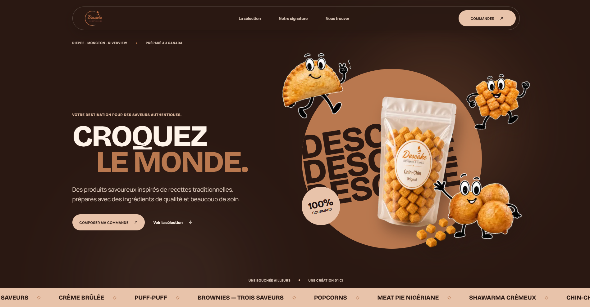
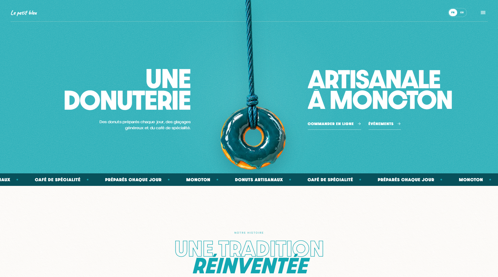
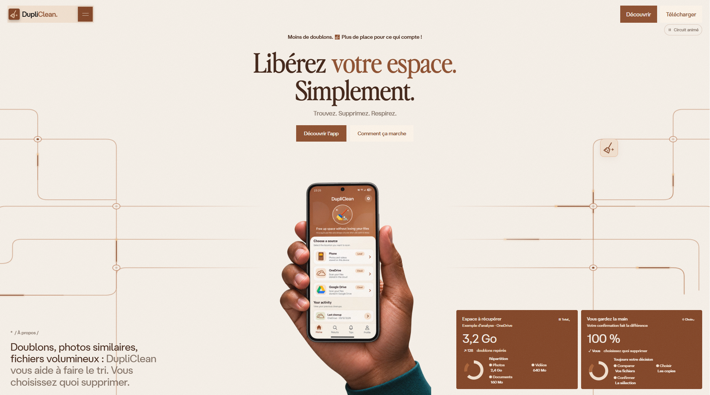

Stratégie & IA
J’utilise l’IA pour explorer les pistes, structurer vos contenus et affiner votre positionnement. Vos objectifs et mon regard stratégique donnent la direction.
CRÉATION DE SITES WEB SUR MESURE
Je conçois et développe des sites web qui donnent vie à vos idées, de la stratégie aux derniers pixels.
Donnons vie à votre projet[ NOS TRAVAUX ]




[ NOTRE MISSION ]
[ NOS EXPERTISES ]
J’utilise l’IA pour explorer les pistes, structurer vos contenus et affiner votre positionnement. Vos objectifs et mon regard stratégique donnent la direction.
L’IA ouvre le champ des idées et accélère les premières maquettes. Je sélectionne, affine et personnalise chaque détail pour créer un univers qui vous ressemble.
Codex, Claude et Gemini m’accompagnent dans le prototypage et l’écriture du code. Je garde la main sur l’architecture, les tests et la qualité de votre site.
Je combine l’analyse, les outils d’IA et les retours de vos visiteurs pour identifier les améliorations utiles. Votre site évolue avec votre activité, avec un accompagnement direct.
[ NOTRE MÉTHODE ]
Un chemin clair, du premier échange
à une présence web prête à se lancer.
● ÉTAPE 01
Je clarifie vos objectifs, votre public et vos priorités pour définir la bonne direction.
● ÉTAPE 02
Je crée les maquettes avec vous pour construire une identité visuelle qui vous ressemble.
● ÉTAPE 03
Votre site prend forme. Je vérifie son confort d’utilisation sur tous les écrans.
● ÉTAPE 04
Je mets votre site en ligne et vous accompagne pour le prendre en main.
[ DES OUTILS AU SERVICE DES IDÉES ]

JavaScript[ NOS ENGAGEMENTS ]
Ce qui compte autant que le résultat final.
Vos objectifs donnent le cap. Chaque choix de design et de développement sert votre projet.
Des échanges réguliers, des étapes visibles et des décisions prises ensemble.
Un site agréable à parcourir, lisible sur mobile et pensé pour vos visiteurs.
Une prise en main accompagnée, pour faire vivre vos contenus en toute confiance.
[ À VOTRE TOUR ]
Un nouveau projet, un site à repenser ou une idée qui attend son moment ? Racontez-moi ce que vous voulez construire. Vous échangez directement avec moi, du premier message à la mise en ligne.
Un premier échange pour parler de votre projet.